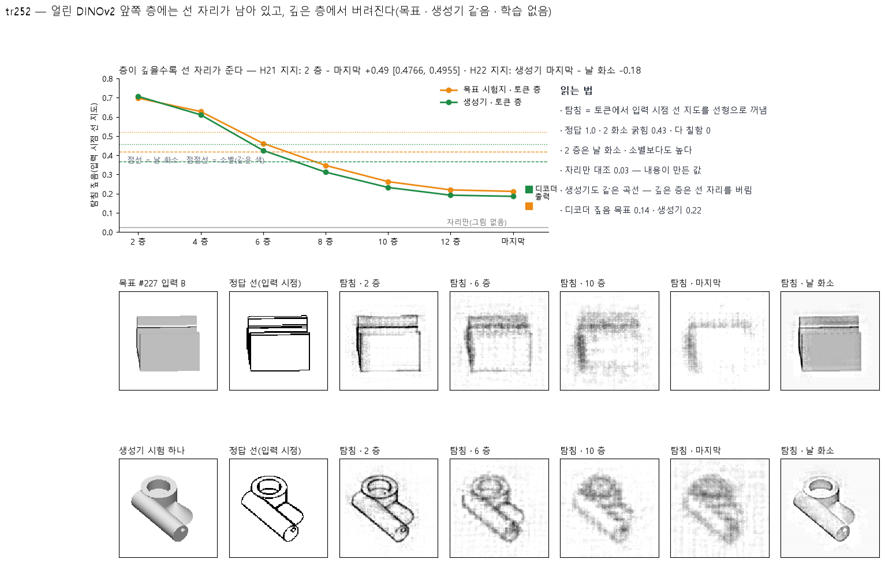

실험 m1_tr0252_h021_중간층
목표 G1.1a 한 장 → 3 면도 · G1.1 사진 → 3 면도(중간 표현) · G1 첫 제품 — 피규어 · 메카 사진 여러 장 + 치수 → 숨은선 3 면도 + 파츠별 CAD · G0 임의의 이미지 → CAD 코드 · 빌린 가정 4: 흰바탕 · 렌더화풍 · 정사영 · 시점앎 · 갚는 계획: 학습 없음 · 판정은 목표 시험지(원화CAD짝 292 렌더) · H22 대조는 생성기 렌더 — 흰바탕 · 렌더화풍 · 시점앎은 실물 사진으로 그 뒤 · 정사영은 원근 렌더로 그 뒤 · 목표 시험지 값: 안 잼 (!)
얼린 DINOv2 중간 층에는 마지막 층에서 줄어든 선 자리가 남아 있나 · 기본 도형(생성기)에서도 토큰은 선 자리를 잃나?
판정 · H21 지지(2 층 탐침 0.70 − 마지막 0.21 = +0.49 · 날 화소 0.42 · 소벨 0.52 보다도 높음 · 자리만 대조 0.03) · H22 지지(생성기에서도 마지막 0.19 < 날 화소 0.37 · 같은 곡선 · 생성기 디코더 짚음도 0.22) — 얼린 DINOv2 는 앞쪽 층에 선 자리를 갖고 있고 깊은 층에서 버린다 · 우리 디코더는 마지막 층만 받아 선 자리를 못 받는다 · 다음 손잡이 = 여러 층 특징(2 ~ 4 층 토큰을 디코더에 · 인코더는 얼린 채) · 작은 판 학습(tr253 · 도입 관문 D1)
| 가설 | 주장 | 결과 | 근거 |
|---|---|---|---|
| H21 | 선 자리는 중간 층에는 남아 있고 마지막 층에서 줄어든다 — 여러 층 특징을 디코더에 주면 되찾을 수 있다 | 지지 | 목표 시험 모델 146 · 층별 탐침 짚음 2 층 0.698 · 4 층 0.628 · 6 층 0.462 · 8 층 0.347 · 10 층 0.263 · 12 층 0.220 · 마지막 0.212(tr251 과 같음) · 날 화소 0.419 · 소벨 0.521 · 자리만 대조(그림 내용 없음) 0.026 · 날 화소 − 2 층 -0.279 [-0.287, -0.269] · 검증 오차도 2 층이 가장 낮음(2.88 · 마지막 4.19) |
| H22 | 기본 도형에서도 토큰은 선 자리를 잃는다 — 생성기에서 망이 잘 그리는 것은 토큰의 선 자리가 아니라 기본 도형 모양을 알아본 사전 지식 덕 | 지지 | 생성기 부품 300 반씩 · 층별 2 층 0.707 · 4 층 0.611 · 6 층 0.425 · 8 층 0.312 · 10 층 0.232 · 12 층 0.192 · 마지막 0.186 · 날 화소 0.368 · 소벨 0.457 · 자리만 0.020 · 목표 같은 차 -0.208 · 생성기 시험 99 P5 디코더 짚음 0.222(목표 0.135) |
분석
한 줄로
물음: 마지막 층 토큰에서 줄어든 선 자리가 얼린 DINOv2 의 중간 층에는 남아 있나? 기본 도형(생성기)에서도 토큰은 선 자리를 잃나?
답: 둘 다 그렇다(H21 · H22 지지). 선 자리는 2 층에 가장 많이 남아 있었고(탐침 짚음 0.70), 층이 깊어질수록 줄어 마지막 층에서 0.21 이 됐다. 날 화소(0.42)나 소벨(0.52)보다도 2 층이 높았다. 생성기에서도 같은 곡선이 나왔다.
왜 이 실험을 했나
tr251 에서 덩어리의 남은 몫은 마지막 층 토큰에서 선 자리가 이미 줄어든 탓이었다. 손잡이는 둘이었다. 중간 층에 선 자리가 남아 있으면 여러 층 특징을 디코더에 주면 되고, 어디에도 없으면 날 화소 갈래를 새로 붙여야 한다. 그 갈림을 학습 없이 먼저 가렸다.
바꾼 것 하나
tr251 의 선형 탐침을 그대로 쓰고, 넣는 특징만 DINOv2 의 2 · 4 · 6 · 8 · 10 · 12 층과 마지막 층으로 바꿨다. 같은 셈을 생성기 부품 300 개(메시를 코드에서 다시 짓고, 렌더가 저장본과 같은지 검사)에도 했다. 중간 층은 결과가 아니라 학습 반의 검증 오차로 골랐다.
결과

| 결과 | 판정선 | 판정 | |
|---|---|---|---|
| H21 (검증으로 고른 2 층) − 마지막 층 | +0.49 [0.48, 0.50] | +0.10 넘게 | 지지 |
| H22 생성기 마지막 층 − 날 화소 | −0.18 [−0.19, −0.17] | −0.10 아래 | 지지 |
짚음은 tr249 에서 자 검사를 통과한 자다(정답 1.0 · 2 화소 굵힘 0.43 · 다 칠함 0). 마지막 층 · 날 화소 · 소벨 값은 tr251 과 똑같이 다시 나왔다.
왜 이렇게 나왔나
확인한 것
- 층별 짚음(목표): 2 층 0.70 → 4 층 0.63 → 6 층 0.46 → 8 층 0.35 → 10 층 0.26 → 12 층 0.22 → 마지막 0.21.
- 토큰 자리만 준 대조(그림 내용 없음)는 0.03 이다. 2 층의 0.70 은 자리 평균이 아니라 그림 내용이 만든 값이다.
- 생성기도 거의 같은 곡선이다(2 층 0.71 → 마지막 0.19). 생성기에서 디코더 짚음도 0.22 로 낮다. 생성기 선 F 0.75 는 2 화소 다대일 자의 너그러움 몫이 크다(tr241 굵기 7.8 과 맞음).
- 모델 #227 에서 2 층 탐침은 상자 모서리를 정답처럼 그렸고, 마지막 층 탐침은 흐린 윤곽만 그렸다.
짐작 (아직 확인 안 함)
- DINOv2 는 깊은 층으로 갈수록 「무엇인가」 를 담고 「어디에 선이 있나」 를 버린다. 우리 디코더는 마지막 층만 받으니 선 자리를 받을 길이 없다.
- 2 ~ 4 층 토큰을 디코더에 함께 주면 덩어리가 선으로 바뀔 수 있다. 다만 tr250(시점 옮기기)의 몫은 그대로 남는다.
한계
- 선형 탐침이다. 마지막 층에 비선형으로 담긴 선 자리는 보지 못한다. 람다는 고른 범위의 끝(10⁴)이었다.
- 탐침 과제는 입력 시점의 선이다. 출력 3 면도로 옮기는 일은 들어 있지 않다.
- 목표 146 · 생성기 150 모델로 배우고 나머지로 쟀다.
배운 것과 다음
얼린 DINOv2 는 앞쪽 층에 선 자리를 갖고 있고 깊은 층에서 버린다. 손잡이는 날 화소 갈래가 아니라 여러 층 특징이다.
- tr253 — 2 · 4 층(필요하면 6 층) 토큰을 디코더에 함께 넣고(인코더는 얼린 채), P5 와 같은 스텝 · 같은 데이터로 작은 판 학습(도입 관문 D1). 대조는 손잡이 없이 같은 스텝을 이어 배운 P5.
- 판정은 목표 시험지 짚음 · 굵기 벌점 자 · 맥락 없는 그림 판정 · 생성기 시험 지킴.
- 이기면 바탕을 바꾸는 승격 관문(G1.3b)을 그때 묶는다.
실험 기록
- 카드 · 층252.py(생성선 · 토큰 · 흐름 · 탐침 · 재기 · 위치대조 · 그림) · 잼.json · 흐름.png · 결과.png · 원본 out/설명/캐드부품/모델252